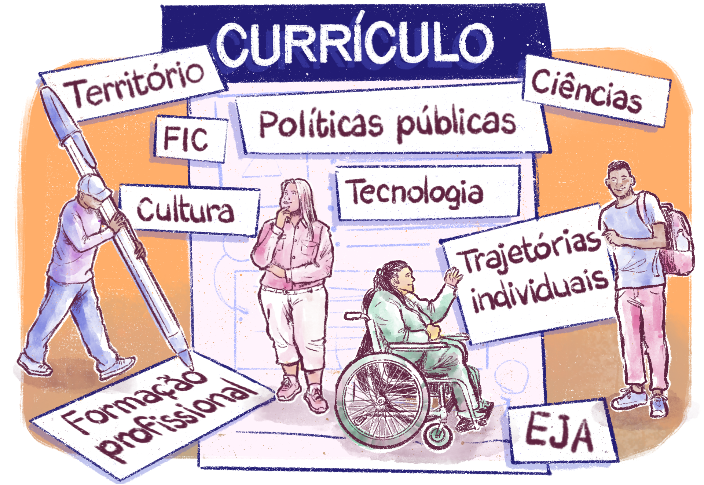
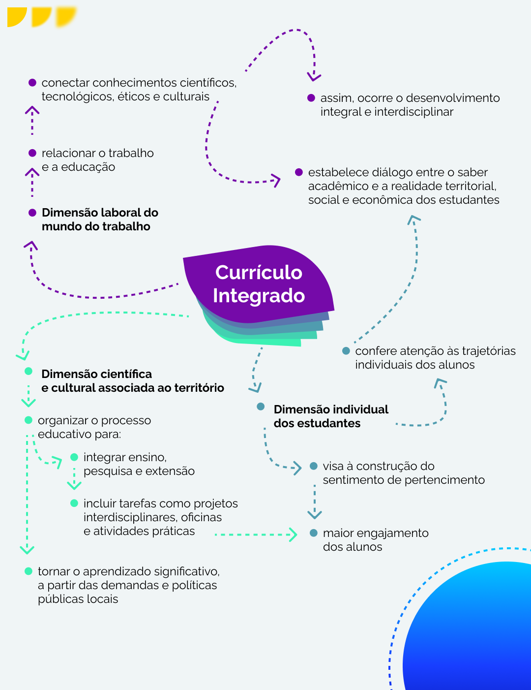

Planejamento curricular: integração das dimensões do trabalho, ciência e tecnologia
O currículo das instituições da EPT precisa ser organizado para articular a formação profissional com os conhecimentos de ciências e tecnologia, atendendo tanto às necessidades de qualificação profissional quanto de preparação para o exercício da cidadania. Esse planejamento deve ser flexível para ser adaptado aos diferentes públicos e modalidades de ensino, incluindo:
-
- cursos de Formação Inicial e Continuada (FIC): para aqueles já inseridos no mundo do trabalho ou que buscam uma requalificação profissional;
- cursos técnicos de nível médio regular ou articulados à EJA: formam jovens e adultos para o ingresso imediato no mundo do trabalho com habilidades técnicas específicas, ou resgatam trajetórias profissionais de estudantes que já estão em atividade profissional e necessitam da formação técnica enquanto elevam a escolaridade ainda não concluída; e
- cursos superiores: proporcionam uma formação em nível superior, combinando o conhecimento técnico com uma abordagem científica.
- cursos de Formação Inicial e Continuada (FIC): para aqueles já inseridos no mundo do trabalho ou que buscam uma requalificação profissional;
Desenvolvimento humano integral e organização do currículo
Na EPT, o objetivo do desenvolvimento humano integral implica a busca por uma efetiva integração entre as dimensões individuais, laborais, científicas e culturais.
Ao contrário de uma abordagem restrita à mera qualificação técnica, o pleno desenvolvimento humano na EPT considera a formação do indivíduo em sua totalidade, incluindo aspectos sociais, éticos, culturais e econômicos. Por isso, segundo Acácia Kuenzer (2007), o currículo deve ser pensado como um espaço de integração entre o saber acadêmico, o mundo do trabalho e a realidade social dos estudantes, promovendo uma formação que contribua para sua emancipação. A seguir, sugerimos um material complementar em que a professora Acácia Kuenzer auxilia na compreensão desse tema:
Título: O trabalho como princípio educativo
Fonte: Prosa (2025c)
Alguns dos atributos importantes para currículos que atendam a essas necessidades e objetivos são os seguintes:
- Perspectiva interdisciplinar: currículos integrados que conectam saberes científicos, tecnológicos e culturais.
- Atenção às trajetórias individuais: adaptação curricular em diálogo com o contexto territorial, social e econômico dos discentes, considerando a complexidade de relações entre as diversas experiências que compõem o espaço da instituição.
A organização curricular deve considerar metodologias que tornem o aprendizado significativo e conectado às experiências dos estudantes, levando em consideração o trabalho como princípio educativo. A inclusão de tarefas como projetos interdisciplinares, oficinas e atividades práticas traz o potencial de maior engajamento dos estudantes no processo formativo.

Título: O currículo construído em coletivo
Fonte: Prosa (2025d)
A estruturação da prática pedagógica fundamentada no tripé Ensino- Pesquisa-Extensão pode vir a ser uma estratégia de impactos relevantes. Buscando atender a essas especificidades do território, é importante também que a estruturação da prática pedagógica leve em conta a indissociabilidade entre as dimensões do processo educativo.
Então, fundamentada no tripé ensino, pesquisa e extensão, as atividades educativas devem ser orientadas pela ideia da totalidade, não dividindo ou hierarquizando algumas atividades em detrimento de outras, mas entendendo que é a integração entre elas que constrói dialeticamente o conhecimento – a partir do envolvimento entre docentes e estudantes nos processos de ensino-aprendizagem. É com esse envolvimento que uma gestão de EPT, nas suas diferentes modalidades, pode olhar para o espaço em que atua – seja dentro dos territórios geográficos, seja no meio virtual. Assim, a gestão se torna mais propícia a perceber de que formas pode contribuir para o engajamento comunitário e fazer com que os estudantes tenham um sentimento de pertencimento que contribua para a permanência e o êxito.
Dessa forma, a prática pedagógica contribuirá para garantir a qualidade do processo de ensino-aprendizagem, de maneira inclusiva e plural, que favoreça uma aprendizagem ativa e significativa. Essas ações são instrumentos indispensáveis para enfrentar desigualdades históricas e promover a equidade não apenas na EPT, mas em todo o sistema educacional.
Segundo Marcela de Oliveira Timóteo (2022), a adoção de estratégias voltadas para gênero, raça e classe ampliam as oportunidades educacionais e criam um ambiente mais igualitário. No Instituto Federal da Bahia (IFBA), por exemplo, a Diretoria Sistêmica de Ações Afirmativas têm implementado.
No entanto, é preciso reconhecer que há impasses na construção de currículos e na promoção de ações inclusivas e adaptadas. Essa adaptação diz respeito à construção de uma proposta educacional orientada para a permanência e que, para isso, considere o desenvolvimento integral, conforme previsto na ementa, articulando as dimensões individuais de cada estudante, além das dimensões laborais do mundo do trabalho, e as científicas e culturais, associadas ao território. Assim, surge um dilema que a gestão educacional poderá encontrar:
Por exemplo, como elaborar um currículo de um curso técnico integrado que atenda ao perfil profissional esperado, conseguindo atender a estudantes na faixa etária de, aproximadamente, 14 anos de idade, recém-saídos do Ensino Fundamental, e a estudantes adultos, que há bastante tempo estão afastados do ambiente escolar, ainda não concluíram sua formação básica, mas já atuam em atividades profissionais?
Os desafios que apontamos aqui se apresentam a cada gestor escolar. Mas, antes disso, apresentam-se cotidianamente a cada um dos nossos estudantes, em sala de aula. Manter-se em uma escola que não os atende é um desafio frequente, e apenas uma gestão voltada à permanência de estudantes na educação poderá refletir e apontar ações eficazes.

Título: Currículo integrado
Fonte: Prosa (2025e).